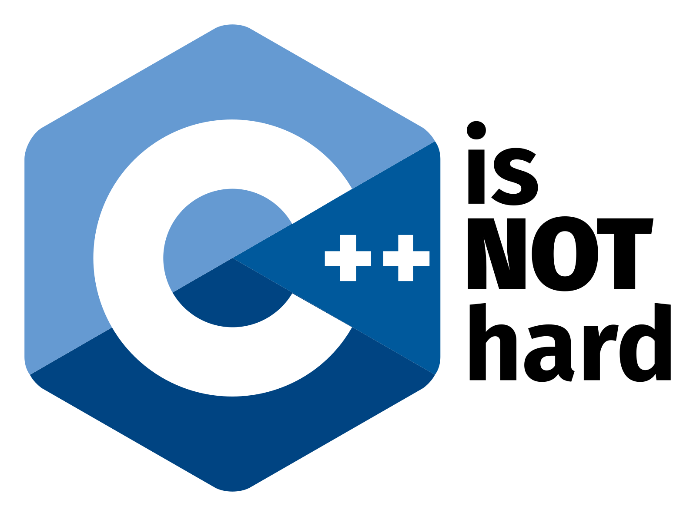

c++
C++ is a programming language developed by Bjarne Stroustrup in 1979 at Bell Labs. C++ is regarded as a middle-level language, as it comprises a combination of both high-level and low-level language features. It is a superset of C, and that virtually any legal C program is a legal C++ program. C++ runs on a variety of platforms, such as Windows, Mac OS, and the various versions of UNIX.
Since its creation, C++ has become one of the most widely used programming languages in the world. Well-written C++ programs are fast and efficient. The language is more flexible than other languages: It can work at the highest levels of abstraction, and down at the level of the silicon. C++ supplies highly optimized standard libraries. It enables access to low-level hardware features, to maximize speed and minimize memory requirements. C++ can create almost any kind of program: Games, device drivers, HPC, cloud, desktop, embedded, and mobile apps, and much more. Even libraries and compilers for other programming languages get written in C++.
One of the original requirements for C++ was backward compatibility with the C language. As a result, C++ has always permitted C-style programming, with raw pointers, arrays, null-terminated character strings, and other features. They may enable great performance, but can also spawn bugs and complexity. The evolution of C++ has emphasized features that greatly reduce the need to use C-style idioms. The old C-programming facilities are still there when you need them. However, in modern C++ code you should need them less and less. Modern C++ code is simpler, safer, more elegant, and still as fast as ever.
The following sections provide an overview of the main features of modern C++. Unless noted otherwise, the features listed here are available in C++11 and later. In the Microsoft C++ compiler, you can set the /std compiler option to specify which version of the standard to use for your project.